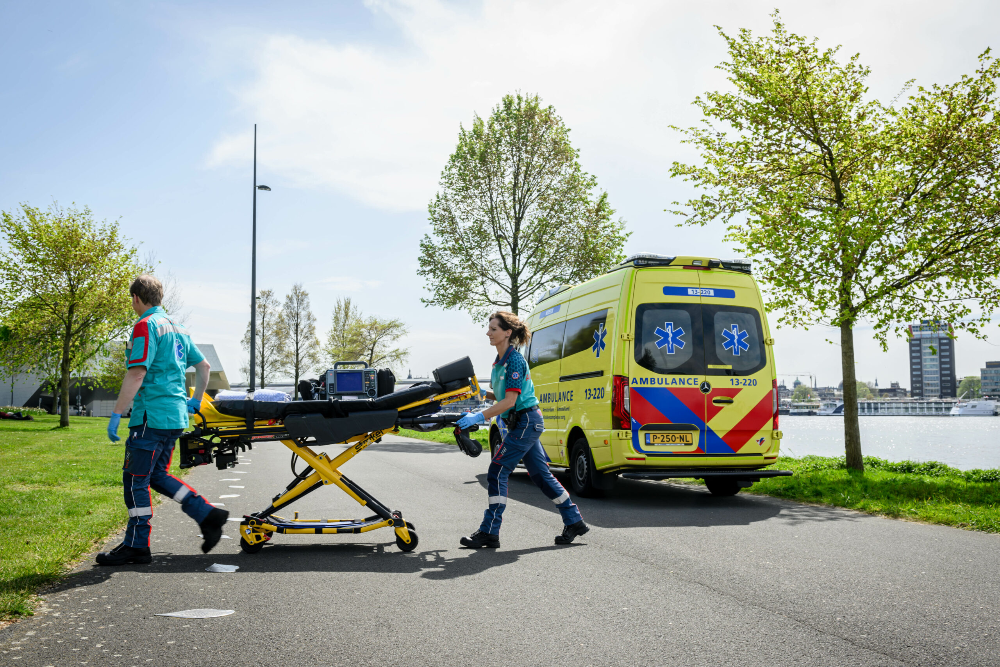

In case of any emergency that requires immediate police assistance, dial 112. This number connects you to all emergency services in the Netherlands, including the police, fire department, and ambulance services. Call 112 for serious incidents, such as theft, assault, or if you witness a crime in progress.
Non-Emergency Police Contact – 0900 8844
For non-urgent matters, you can reach the Dutch police by dialing 0900 8844. This number is for situations that require police assistance but aren’t emergencies, such as reporting a lost item, a minor accident, or suspicious activity. Non-emergency calls help keep emergency lines clear for urgent cases.

Emergency Medical Care
Ambulance personnel are trained to handle a wide range of medical emergencies, from accidents and injuries to sudden illness. They carry essential medical equipment to stabilize patients during transport and can communicate with hospital staff to prepare for the patient’s arrival if further treatment is needed.
When to Call an Ambulance
You should call 112 for an ambulance in situations such as: